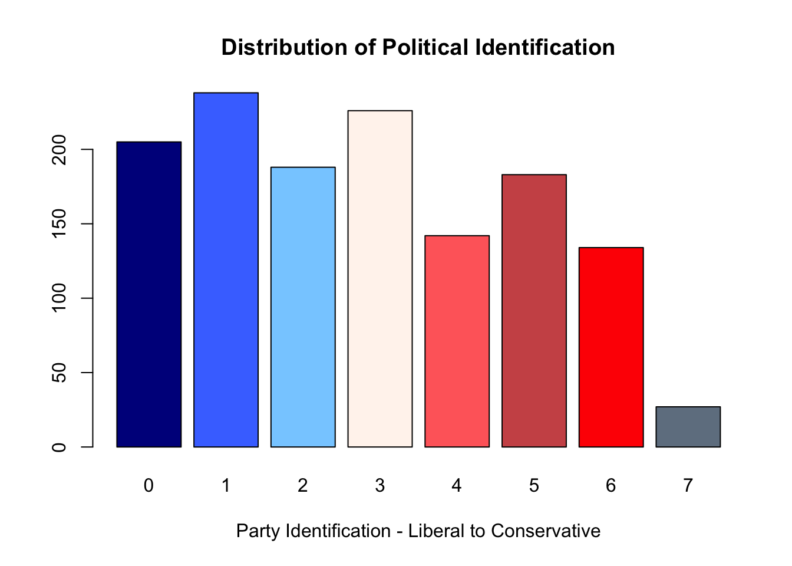
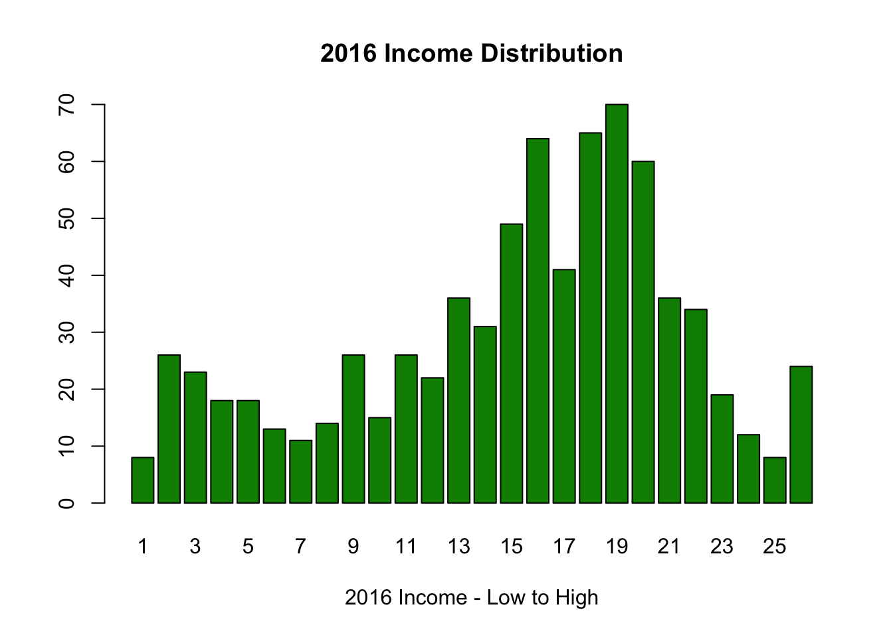

This project seeks to analyse the relationship between political beliefs and views on regulation of business. The conventional association is that more Conservative people tend to be in favour limited government regulation in the free market economy, while Liberals believe in the role of the government in curbing excess and protecting consumers. To investigate this I looked at data from the 2016 General Social Survey, specifically the political identification of people and their views on whether there should be less regulation of business. My hypothesis was that Liberals would favour more regulation while Conservatives would favour less.
Here is how the data turned out:
counts <- table(gss$partyid, gss$lessreg)
barplot(counts, main="Distribution of Views on Regulation", xlab="Views on Regulation")
chisq.test(table(gss$partyid, gss$lessreg))## Warning in chisq.test(table(gss$partyid, gss$lessreg)): Chi-squared
## approximation may be incorrect##
## Pearson's Chi-squared test
##
## data: table(gss$partyid, gss$lessreg)
## X-squared = 208.69, df = 28, p-value < 2.2e-16reg1 <- lm(partyid ~ lessreg, data = gss)
summary(reg1)##
## Call:
## lm(formula = partyid ~ lessreg, data = gss)
##
## Residuals:
## <Labelled double>
## Min 1Q Median 3Q Max
## -3.6920 -1.5380 -0.1150 1.4620 5.6161
##
## Labels:
## value label
## 0 STRONG DEMOCRAT
## 1 NOT STR DEMOCRAT
## 2 IND,NEAR DEM
## 3 INDEPENDENT
## 4 IND,NEAR REP
## 5 NOT STR REPUBLICAN
## 6 STRONG REPUBLICAN
## 7 OTHER PARTY
## 8 DK
## 9 NA
##
## Coefficients:
## Estimate Std. Error t value Pr(>|t|)
## (Intercept) 4.26905 0.13431 31.79 <2e-16 ***
## lessreg -0.57702 0.04877 -11.83 <2e-16 ***
## ---
## Signif. codes: 0 '***' 0.001 '**' 0.01 '*' 0.05 '.' 0.1 ' ' 1
##
## Residual standard error: 1.918 on 1341 degrees of freedom
## (1524 observations deleted due to missingness)
## Multiple R-squared: 0.09451, Adjusted R-squared: 0.09384
## F-statistic: 140 on 1 and 1341 DF, p-value: < 2.2e-16plot(partyid ~ lessreg, data = gss)
There was a clear correlation between
Copyright © 2017 Malcolm Palley, Inc. All rights reserved.